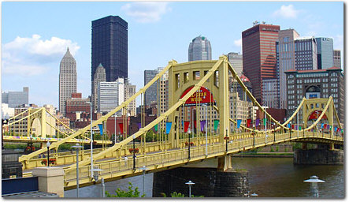

About Pittsburgh

Pittsburgh has recast itself into a pleasing blend of turn-of-the-20th-century architectural masterpieces and modern skyscrapers, consistently ranked among the nation's most livable cities. Visitors will find that Pittsburgh has a real sense of fun, with outdoor activities on its rivers and parks, unique shopping downtown and in surrounding neighborhoods, and excellent dining in some of the state's most interesting locales.
Pittsburgh—which was called Fort Duquesne when it was an 18th-century French fortress and trading post, and then renamed Fort Pitt under British control—lies where the Allegheny and Monongahela rivers meet to form the Ohio River, in the hills of southwestern Pennsylvania. The peninsula formed at the confluence of the three rivers grew into the downtown area, often referred to as the Golden Triangle. The city chose to put a park at its very tip, fittingly referred to as the Point; the stadium that once stood across the Allegheny from here (it was imploded in early 2001) bore the geographical imprint in its name—Three Rivers Stadium.
The city emerged as an industrial powerhouse in the 1800s, mostly due to iron and steel production. Today, the days of steel manufacturing are mostly gone, and with them the industrial pollution that earned the city the nickname "Smoky City."
For the best view of Pittsburgh, take one of
the city's two 19th-century cable cars and travel up Mt.
Washington—the views are breathtaking from up here. You can see the rivers
flowing together, appreciate the city's unique skyline, and take in the two new
stadiums, which flank the site of the former Three Rivers Stadium and are home
to the Pittsburgh
Pirates and Pittsburgh
Steelers. You can also drive or walk through the South Side Slopes, a unique
neighborhood where houses cling to a steep hillside overlooking the Monongahela
River.
-Fodors
Site Sponsored by
The American Society for Information Science and Technology
Follow DublinCore
on 
{kind=link}